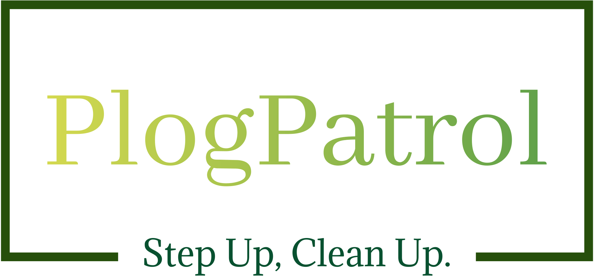
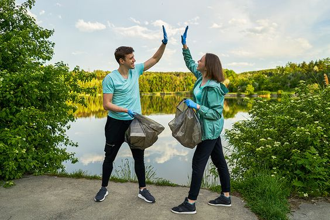
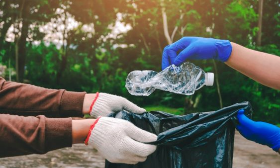
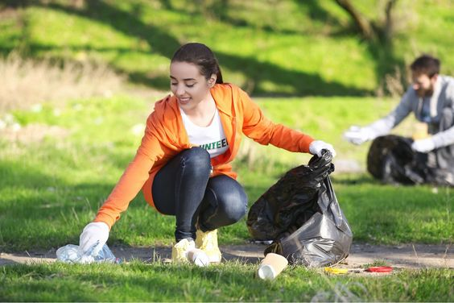
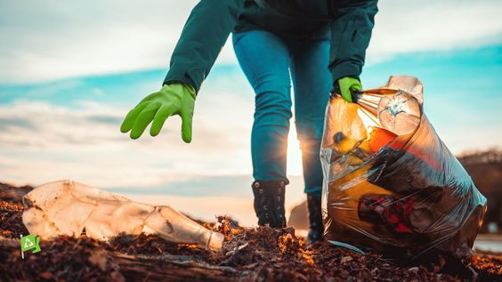
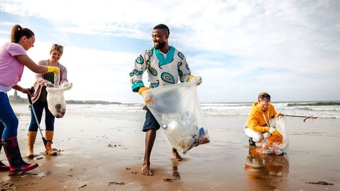
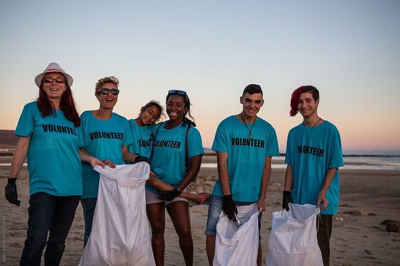

ST
Our Story
Plogging began as a simple idea: combining the benefits of jogging with the need for environmental care. Today it brings people together through visible, local action.

Step Up, Clean Up.
Join plogging events, support cleanup drives, and help turn everyday movement into practical environmental action.
Plogging began as a simple idea: combining the benefits of jogging with the need for environmental care. Today it brings people together through visible, local action.
We organize cleanup events that promote healthier habits, cleaner public spaces, and stronger participation from citizens, donors, and volunteers.
Plogging means jogging while picking up litter. It is a simple and effective way to combine movement with environmental responsibility.
We work toward neighborhoods where cleaner streets become a shared habit and every event creates momentum for the next one.





